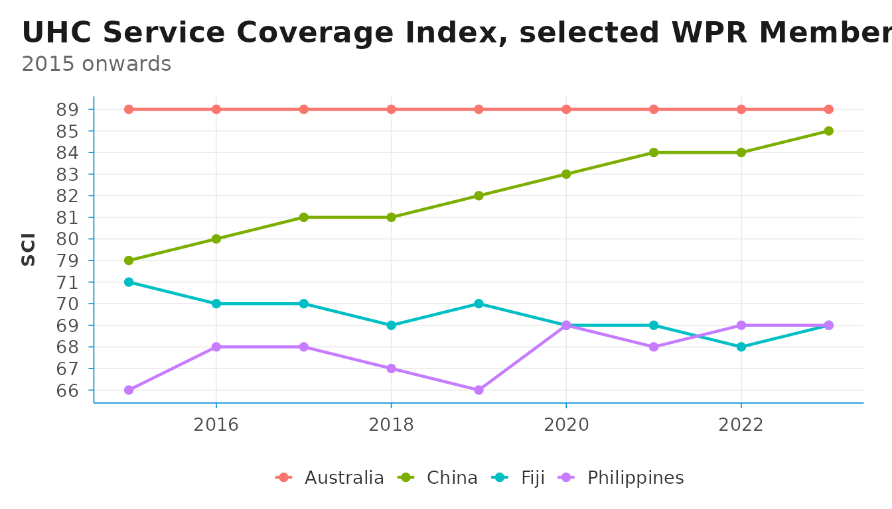
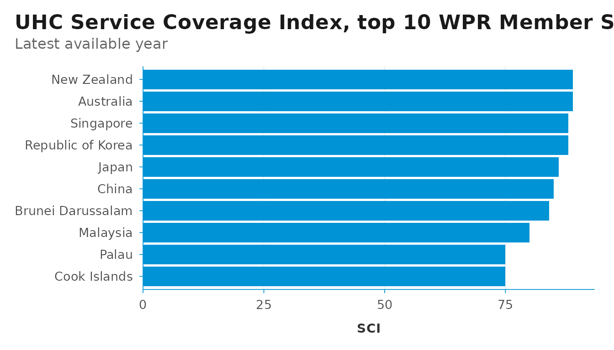
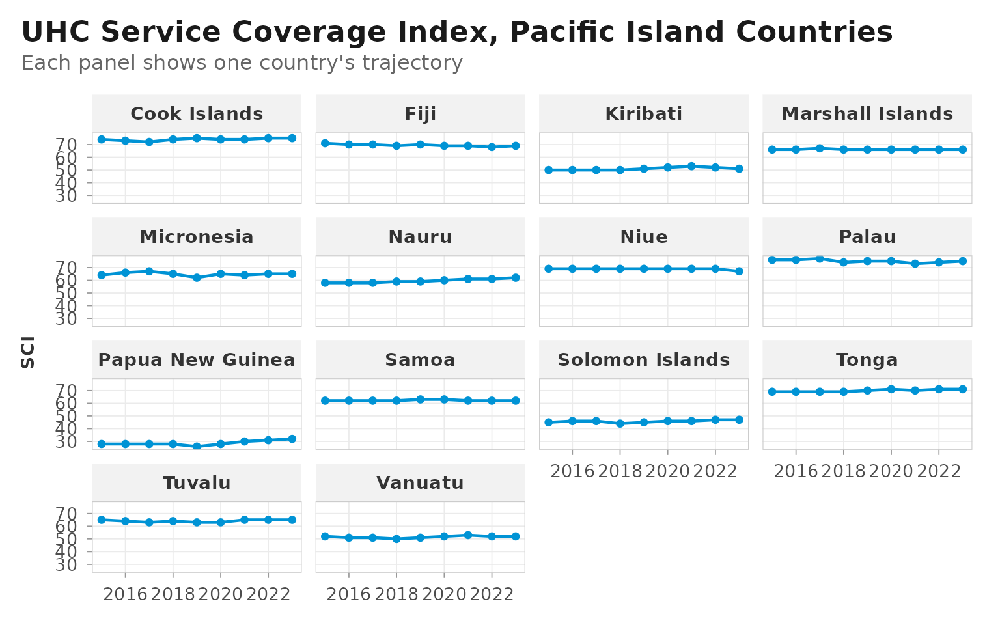

library(DSIR)
library(dplyr)
#>
#> Attaching package: 'dplyr'
#> The following objects are masked from 'package:stats':
#>
#> filter, lag
#> The following objects are masked from 'package:base':
#>
#> intersect, setdiff, setequal, union
library(ggplot2)
DSIR is a small R package for global health data work. It consists of
WHO Member State metadata, lightweight clients for the GHO and UN SDG
APIs, and reusable WHO-style ggplot2 and
flextable themes. DSIR is designed for health
professionals, WHO staff, and global health researchers — the kind of
users who do the same routine tasks every day.
This vignette walks through the typical workflow: looking up countries, fetching data from GHO and SDG, cleaning the raw response, and producing publication-style charts and tables.
WHO Member State metadata
The who_countries tibble lists all 194 WHO Member States
with their ISO3, ISO2, UN M49 codes, official names, short names, and
WHO region. For Western Pacific countries, an extra column
is_pic identifies the 14 Pacific Island Countries.
who_countries
#> # A tibble: 194 × 7
#> iso3 iso2 m49_code name_official name_short who_region is_pic
#> <chr> <chr> <chr> <chr> <chr> <chr> <lgl>
#> 1 AFG AF 004 Afghanistan Afghanistan EMR FALSE
#> 2 ALB AL 008 Albania Albania EUR FALSE
#> 3 DZA DZ 012 Algeria Algeria AFR FALSE
#> 4 AND AD 020 Andorra Andorra EUR FALSE
#> 5 AGO AO 024 Angola Angola AFR FALSE
#> 6 ATG AG 028 Antigua and Barbuda Antigua and Barbu… AMR FALSE
#> 7 ARG AR 032 Argentina Argentina AMR FALSE
#> 8 ARM AM 051 Armenia Armenia EUR FALSE
#> 9 AUS AU 036 Australia Australia WPR FALSE
#> 10 AUT AT 040 Austria Austria EUR FALSE
#> # ℹ 184 more rowsFor convenience, DSIR offers pre-defined vectors of ISO3 codes for each WHO region.
wpro_cty
#> [1] "AUS" "BRN" "CHN" "COK" "FJI" "FSM" "IDN" "JPN" "KHM" "KIR" "KOR" "LAO"
#> [13] "MHL" "MNG" "MYS" "NIU" "NRU" "NZL" "PHL" "PLW" "PNG" "SGP" "SLB" "TON"
#> [25] "TUV" "VNM" "VUT" "WSM"
length(wpro_cty) # 28 Member States in WPR (since May 2025)
#> [1] 28The is_pic flag is useful because Pacific Island
Countries are often analysed as a group, given their distinct
demographic and geographic profiles.
who_countries |>
filter(is_pic) |>
select(iso3, name_short)
#> # A tibble: 14 × 2
#> iso3 name_short
#> <chr> <chr>
#> 1 COK Cook Islands
#> 2 FJI Fiji
#> 3 KIR Kiribati
#> 4 MHL Marshall Islands
#> 5 FSM Micronesia
#> 6 NRU Nauru
#> 7 NIU Niue
#> 8 PLW Palau
#> 9 PNG Papua New Guinea
#> 10 WSM Samoa
#> 11 SLB Solomon Islands
#> 12 TON Tonga
#> 13 TUV Tuvalu
#> 14 VUT VanuatuWhen you have a vector of ISO3 codes and need to know which WHO
region each belongs to, iso3_to_region() provides the
lookup. It is vectorised and returns NA for codes that do
not match a WHO Member State.
iso3_to_region(c("PHL", "FRA", "ZAF", "USA", "XYZ"))
#> [1] "WPR" "EUR" "AFR" "AMR" NA
# "WPR" "EUR" "AFR" "AMR" NAThis is convenient when joining external datasets (which often arrive keyed only by ISO3) to the WHO regional structure.
The companion helper iso3_to_m49() converts ISO3 codes
to UN M49 numeric codes — useful because the WHO GHO API is keyed by
ISO3 ("PHL") while the UN SDG API is keyed by M49
("608"). The M49 values are returned as three-character
zero-padded strings, exactly as stored in
who_countries$m49_code.
iso3_to_m49(c("PHL", "FRA", "JPN"))
#> [1] "608" "250" "392"
# "608" "250" "392"
# Case-insensitive; non-Member areas return NA
iso3_to_m49(c("phl", "PRI"))
#> [1] "608" NA
# "608" NAIn practice you can usually skip the explicit conversion:
sdg_data() and sdg_coverage() accept ISO3
codes for their area argument and do the lookup internally
(see the SDG section below).
Checking availability before fetching
GHO has thousands of indicators, but any single indicator may not
cover the countries or years you need. Before issuing a full download
with gho_data(), three lightweight helpers let you ask the
server what is available without transferring any observations.
gho_has_data() is a quick yes / no for a given indicator
and filter — useful when screening a list of candidate indicators.
# Does WHO have life-expectancy data for France?
gho_has_data("WHOSIS_000001", area = "FRA")
#> Assuming `spatial_type` = "country" since `area` was given.
#> ℹ Pass `spatial_type` explicitly to silence this message.
#> Fetching:
#> <https://ghoapi.azureedge.net/api/WHOSIS_000001?$filter=SpatialDimType%20eq%20%27COUNTRY%27%20and%20SpatialDim%20in%20%28%27FRA%27%29&$top=1&$select=Id>
#> [1] TRUE
# TRUE
# Bulk-screen several indicators at once
inds <- c("WHOSIS_000001", "NCDMORT3070", "MDG_0000000026")
vapply(inds, gho_has_data, logical(1), area = "PHL")
#> Assuming `spatial_type` = "country" since `area` was given.
#> ℹ Pass `spatial_type` explicitly to silence this message.
#> Fetching:
#> <https://ghoapi.azureedge.net/api/WHOSIS_000001?$filter=SpatialDimType%20eq%20%27COUNTRY%27%20and%20SpatialDim%20in%20%28%27PHL%27%29&$top=1&$select=Id>
#> Assuming `spatial_type` = "country" since `area` was given.
#> ℹ Pass `spatial_type` explicitly to silence this message.
#> Fetching:
#> <https://ghoapi.azureedge.net/api/NCDMORT3070?$filter=SpatialDimType%20eq%20%27COUNTRY%27%20and%20SpatialDim%20in%20%28%27PHL%27%29&$top=1&$select=Id>
#> Assuming `spatial_type` = "country" since `area` was given.
#> ℹ Pass `spatial_type` explicitly to silence this message.
#> Fetching:
#> <https://ghoapi.azureedge.net/api/MDG_0000000026?$filter=SpatialDimType%20eq%20%27COUNTRY%27%20and%20SpatialDim%20in%20%28%27PHL%27%29&$top=1&$select=Id>
#> WHOSIS_000001 NCDMORT3070 MDG_0000000026
#> TRUE TRUE TRUEIt returns TRUE, FALSE, or NA
(for request failures, including a non-existent indicator code — GHO
returns HTTP 404 in that case).
gho_count() returns the number of rows the same filter
would produce, which is useful for sizing a download.
gho_count("WHOSIS_000001", area = wpro_cty)
#> Assuming `spatial_type` = "country" since `area` was given.
#> ℹ Pass `spatial_type` explicitly to silence this message.
#> Fetching:
#> <https://ghoapi.azureedge.net/api/WHOSIS_000001?$filter=SpatialDimType%20eq%20%27COUNTRY%27%20and%20SpatialDim%20in%20%28%27AUS%27%2C%27BRN%27%2C%27CHN%27%2C%27COK%27%2C%27FJI%27%2C%27FSM%27%2C%27IDN%27%2C%27JPN%27%2C%27KHM%27%2C%27KIR%27%2C%27KOR%27%2C%27LAO%27%2C%27MHL%27%2C%27MNG%27%2C%27MYS%27%2C%27NIU%27%2C%27NRU%27%2C%27NZL%27%2C%27PHL%27%2C%27PLW%27%2C%27PNG%27%2C%27SGP%27%2C%27SLB%27%2C%27TON%27%2C%27TUV%27%2C%27VNM%27%2C%27VUT%27%2C%27WSM%27%29&$top=0&$count=true>
#> [1] 1452gho_coverage() summarises year coverage and observation
counts per country. The payload is small because only
SpatialDim and TimeDim are requested from the
server.
gho_coverage("WHOSIS_000001", area = c("FRA", "DEU", "JPN"))
#> Fetching:
#> <https://ghoapi.azureedge.net/api/WHOSIS_000001?$filter=SpatialDimType%20eq%20%27COUNTRY%27%20and%20SpatialDim%20in%20%28%27FRA%27%2C%27DEU%27%2C%27JPN%27%29&$select=SpatialDim,TimeDim>
#> # A tibble: 3 × 4
#> location year_min year_max n_obs
#> <chr> <int> <int> <int>
#> 1 DEU 2000 2021 66
#> 2 FRA 2000 2021 66
#> 3 JPN 2000 2021 66
#> location year_min year_max n_obs
#> 1 DEU 2000 2021 66
#> 2 FRA 2000 2021 66
#> 3 JPN 2000 2021 66Fetching indicator data from GHO
To fetch indicators from GHO, the typical workflow is three steps:
search for the indicator code, fetch the data, then clean the response.
The area argument accepts a long ISO3 vector, so a whole
region can be pulled in one call.
Step 1: Search for an indicator
gho_indicators("UHC") |> head()
#> Fetching:
#> <https://ghoapi.azureedge.net/api/Indicator?$filter=contains%28tolower%28IndicatorName%29%2C%27uhc%27%29>
#> # A tibble: 6 × 3
#> IndicatorCode IndicatorName Language
#> <chr> <chr> <chr>
#> 1 HSS_UHCLEGISLATION Countries that have passed legislation on Uni… EN
#> 2 UHC_SCI_INFECT UHC Service Coverage sub-index on infectious … EN
#> 3 UHC_AVAILABILITY_SCORE Primary data availability for UHC Service Cov… EN
#> 4 UHC_DATA_AVAIL_CODE Data availability for UHC index of essential … EN
#> 5 UHC_SCI_CAPACITY UHC Service Coverage sub-index on service cap… EN
#> 6 UHC_SCI_RMNCH UHC Service Coverage sub-index on reproductiv… ENPick an IndicatorCode from the result — this is the
value you pass to gho_data() in the next step.
Step 2: Fetch the data
uhc <- gho_data(
indicator = "UHC_INDEX_REPORTED",
spatial_type = "country",
area = wpro_cty,
year_from = 2015
)
#> Fetching:
#> <https://ghoapi.azureedge.net/api/UHC_INDEX_REPORTED?$filter=SpatialDimType%20eq%20%27COUNTRY%27%20and%20SpatialDim%20in%20%28%27AUS%27%2C%27BRN%27%2C%27CHN%27%2C%27COK%27%2C%27FJI%27%2C%27FSM%27%2C%27IDN%27%2C%27JPN%27%2C%27KHM%27%2C%27KIR%27%2C%27KOR%27%2C%27LAO%27%2C%27MHL%27%2C%27MNG%27%2C%27MYS%27%2C%27NIU%27%2C%27NRU%27%2C%27NZL%27%2C%27PHL%27%2C%27PLW%27%2C%27PNG%27%2C%27SGP%27%2C%27SLB%27%2C%27TON%27%2C%27TUV%27%2C%27VNM%27%2C%27VUT%27%2C%27WSM%27%29%20and%20TimeDim%20ge%202015>
uhc |> glimpse()
#> Rows: 252
#> Columns: 25
#> $ Id <int> 4218560, 4249516, 4367637, 4376434, 4404965, 441300…
#> $ IndicatorCode <chr> "UHC_INDEX_REPORTED", "UHC_INDEX_REPORTED", "UHC_IN…
#> $ SpatialDimType <chr> "COUNTRY", "COUNTRY", "COUNTRY", "COUNTRY", "COUNTR…
#> $ SpatialDim <chr> "PNG", "MYS", "WSM", "SGP", "LAO", "TON", "MYS", "K…
#> $ TimeDimType <chr> "YEAR", "YEAR", "YEAR", "YEAR", "YEAR", "YEAR", "YE…
#> $ ParentLocationCode <chr> "WPR", "WPR", "WPR", "WPR", "WPR", "WPR", "WPR", "W…
#> $ ParentLocation <chr> "Western Pacific", "Western Pacific", "Western Paci…
#> $ Dim1Type <lgl> NA, NA, NA, NA, NA, NA, NA, NA, NA, NA, NA, NA, NA,…
#> $ TimeDim <int> 2023, 2019, 2019, 2018, 2021, 2018, 2016, 2019, 202…
#> $ Dim1 <lgl> NA, NA, NA, NA, NA, NA, NA, NA, NA, NA, NA, NA, NA,…
#> $ Dim2Type <lgl> NA, NA, NA, NA, NA, NA, NA, NA, NA, NA, NA, NA, NA,…
#> $ Dim2 <lgl> NA, NA, NA, NA, NA, NA, NA, NA, NA, NA, NA, NA, NA,…
#> $ Dim3Type <lgl> NA, NA, NA, NA, NA, NA, NA, NA, NA, NA, NA, NA, NA,…
#> $ Dim3 <lgl> NA, NA, NA, NA, NA, NA, NA, NA, NA, NA, NA, NA, NA,…
#> $ DataSourceDimType <lgl> NA, NA, NA, NA, NA, NA, NA, NA, NA, NA, NA, NA, NA,…
#> $ DataSourceDim <lgl> NA, NA, NA, NA, NA, NA, NA, NA, NA, NA, NA, NA, NA,…
#> $ Value <chr> "32", "80", "63", "88", "60", "69", "80", "87", "52…
#> $ NumericValue <dbl> 32, 80, 63, 88, 60, 69, 80, 87, 52, 71, 89, 71, 66,…
#> $ Low <lgl> NA, NA, NA, NA, NA, NA, NA, NA, NA, NA, NA, NA, NA,…
#> $ High <lgl> NA, NA, NA, NA, NA, NA, NA, NA, NA, NA, NA, NA, NA,…
#> $ Comments <lgl> NA, NA, NA, NA, NA, NA, NA, NA, NA, NA, NA, NA, NA,…
#> $ Date <chr> "2025-12-05T11:39:13.277+01:00", "2025-12-05T11:39:…
#> $ TimeDimensionValue <chr> "2023", "2019", "2019", "2018", "2021", "2018", "20…
#> $ TimeDimensionBegin <chr> "2023-01-01T00:00:00+01:00", "2019-01-01T00:00:00+0…
#> $ TimeDimensionEnd <chr> "2023-12-31T00:00:00+01:00", "2019-12-31T00:00:00+0…Note that area accepts long ISO3 vectors — here we fetch
all 28 WPR countries in one call.
Step 3: Clean the raw response
gho_clean() drops the internal OData columns and renames
what remains, leaving a compact tibble with indicator,
location, year, three optional dimensions, and
value / low / high.
uhc_clean <- gho_clean(uhc)
uhc_clean
#> # A tibble: 252 × 11
#> id location year dim1 dim2 dim3 value value_num low high indicator
#> <chr> <chr> <int> <lgl> <lgl> <lgl> <chr> <dbl> <lgl> <lgl> <lgl>
#> 1 UHC_I… AUS 2015 NA NA NA 89 89 NA NA NA
#> 2 UHC_I… AUS 2016 NA NA NA 89 89 NA NA NA
#> 3 UHC_I… AUS 2017 NA NA NA 89 89 NA NA NA
#> 4 UHC_I… AUS 2018 NA NA NA 89 89 NA NA NA
#> 5 UHC_I… AUS 2019 NA NA NA 89 89 NA NA NA
#> 6 UHC_I… AUS 2020 NA NA NA 89 89 NA NA NA
#> 7 UHC_I… AUS 2021 NA NA NA 89 89 NA NA NA
#> 8 UHC_I… AUS 2022 NA NA NA 89 89 NA NA NA
#> 9 UHC_I… AUS 2023 NA NA NA 89 89 NA NA NA
#> 10 UHC_I… BRN 2015 NA NA NA 84 84 NA NA NA
#> # ℹ 242 more rowsAggregating indicators with geomean()
Some health indicators are constructed as the geometric mean of
component values rather than the arithmetic mean. The UHC Service
Coverage Index, for example, aggregates 14 tracer indicators using
nested geometric means. DSIR provides geomean() for
this:
# Unweighted geometric mean
geomean(c(0.6, 0.8, 0.95))
#> [1] 0.7697002
#> 0.7720589
# With optional weights — useful when tracers have different
# methodological importance
geomean(c(0.6, 0.8, 0.95), w = c(2, 1, 1))
#> [1] 0.7232343geomean() handles missing values, zeros, and negative
values sensibly — see ?geomean for details. It is a small
helper, but it removes a common source of bugs when re-implementing
index calculations from indicator components.
Plotting with theme_dsi() and theme_dsi_facet()
DSIR provides two paired ggplot2 themes tuned for
WHO-style charts — clean panels, modest grids, and a consistent accent
colour. Use them as drop-in replacements for
theme_minimal() and theme_bw() respectively
whenever a chart is heading into a WHO deliverable.
The rule of thumb is simple: single-panel plots use
theme_dsi(), faceted plots use
theme_dsi_facet(). The two share typography, title
treatment, and legend handling, but differ in how they frame the data —
the facet variant adds panel borders, light strip backgrounds, and
breathing room between panels, all of which would look heavy on a
single-panel chart.
Single panel: theme_dsi()
theme_dsi() keeps the chart chrome minimal — a
half-frame axis, light grid lines, and the WHO-blue accent on the axis
line. By default the grid runs in both directions; pass
grid = "y" for the minimalist horizontal-only look.
uhc_clean |>
filter(location %in% c("AUS", "CHN", "PHL", "FJI")) |>
left_join(who_countries, by = c("location" = "iso3")) |>
ggplot(aes(x = year, y = value, group = location, color = name_short)) +
geom_line(linewidth = .8) +
geom_point(size = 1.8) +
theme_dsi() +
labs(
title = "UHC Service Coverage Index, selected WPR Member States",
subtitle = "2015 onwards",
x = NULL, y = "SCI", color = NULL
)
For bar charts, pair theme_dsi() with
scale_y_dsi_col() (or scale_x_dsi_col() when
value is mapped to x) — these are thin
wrappers around scale_*_continuous() that remove the lower
axis expansion, so columns sit flush with the axis instead of floating
above it.
uhc_clean |>
filter(year == max(year)) |>
left_join(who_countries, by = c("location" = "iso3")) |>
arrange(desc(value)) |>
head(10) |>
ggplot(aes(reorder(name_short, value_num), value_num)) +
geom_col(fill = "#0093D5") +
coord_flip() +
scale_y_dsi_col() +
theme_dsi(grid = "x") +
labs(
title = "UHC Service Coverage Index, top 10 WPR Member States",
subtitle = "Latest available year",
x = NULL, y = "SCI"
)
Faceted: theme_dsi_facet()
When the same chart is split across many small panels, the half-frame
look becomes visually noisy — the accent-blue axis line repeats across
every facet. theme_dsi_facet() switches to a full panel
border, adds a light grey strip background to clearly mark each facet’s
label, and introduces panel spacing so adjacent panels don’t run
together.
uhc_clean |>
left_join(who_countries, by = c("location" = "iso3")) |>
filter(is_pic) |>
ggplot(aes(x = year, y = value_num)) +
geom_line(color = "#0093D5", linewidth = 0.8) +
geom_point(color = "#0093D5", size = 1.5) +
facet_wrap(~ name_short, ncol = 4) +
theme_dsi_facet() +
labs(
title = "UHC Service Coverage Index, Pacific Island Countries",
subtitle = "Each panel shows one country's trajectory",
x = NULL, y = "SCI"
)
The strip_fill argument lets you change the strip
background colour for emphasis — for example, a light-blue tone derived
from the WHO accent for a deliverable where the strips themselves carry
meaning:
uhc_clean |>
left_join(who_countries, by = c("location" = "iso3")) |>
filter(is_pic) |>
ggplot(aes(x = year, y = value_num)) +
geom_line(color = "#0093D5", linewidth = 0.8) +
facet_wrap(~ name_short, ncol = 4) +
theme_dsi_facet(strip_fill = "#E5F4FB") +
labs(title = "UHC SCI, PIC — with custom strip colour",
x = NULL, y = "SCI")
Tables with dsi_flextable_defaults()
dsi_flextable_defaults() sets WHO-style defaults for
flextable globally — booktabs theme, bold headers, modest
padding. Call it once near the top of your report and every subsequent
flextable() picks up the formatting.
library(flextable)
dsi_flextable_defaults(font_family = "Geogria")
uhc_clean |>
filter(year == max(year)) |>
left_join(who_countries, by = c("location" = "iso3")) |>
select(name_short, value) |>
arrange(desc(value)) |>
flextable() |>
set_table_properties("autofit", width = .6) %>%
set_caption("UHC SCI in WPR, latest year")name_short |
value |
|---|---|
Australia |
89 |
New Zealand |
89 |
Republic of Korea |
88 |
Singapore |
88 |
Japan |
86 |
China |
85 |
Brunei Darussalam |
84 |
Malaysia |
80 |
Cook Islands |
75 |
Palau |
75 |
Tonga |
71 |
Viet Nam |
71 |
Mongolia |
70 |
Fiji |
69 |
Philippines |
69 |
Indonesia |
67 |
Niue |
67 |
Marshall Islands |
66 |
Micronesia |
65 |
Tuvalu |
65 |
Lao PDR |
64 |
Cambodia |
62 |
Nauru |
62 |
Samoa |
62 |
Vanuatu |
52 |
Kiribati |
51 |
Solomon Islands |
47 |
Papua New Guinea |
32 |
Working with SDG indicators
sdg_data() and sdg_clean() follow the same
fetch-then-tidy pattern as their GHO counterparts. The main differences
are that indicator codes use the dotted SDG format
(e.g. "3.4.1") and that value,
low, and high are kept as character — the SDG
API returns non-numeric entries ("<0.1", aggregate
notes) for some rows, so coerce with as.numeric() only when
you are ready to drop them.
sdg_indicators() accepts an optional search
argument with the same behaviour as gho_indicators() —
multiple keywords are AND-ed together and matched case-insensitively
against the indicator description. The filter runs client-side because
the UN SDG indicator list is short (~250 rows) and the endpoint is not
OData.
# All indicators that mention both mortality and cancer
sdg_indicators("mortality cancer")
#> Fetching:
#> <https://unstats.un.org/sdgs/UNSDGAPIV5/v1/sdg/Indicator/List>
#> # A tibble: 1 × 7
#> goal target code description tier uri series
#> <chr> <chr> <chr> <chr> <chr> <chr> <list>
#> 1 3 3.4 3.4.1 Mortality rate attributed to cardiovasc… 1 /v1/… <df>
# Same as above, but with explicit terms (allows whitespace inside a term)
sdg_indicators(c("maternal", "mortality"))
#> Fetching:
#> <https://unstats.un.org/sdgs/UNSDGAPIV5/v1/sdg/Indicator/List>
#> # A tibble: 1 × 7
#> goal target code description tier uri series
#> <chr> <chr> <chr> <chr> <chr> <chr> <list>
#> 1 3 3.1 3.1.1 Maternal mortality ratio 1 /v1/sdg/Indicator/3.… <df>The area argument of sdg_data() and
sdg_coverage() accepts either ISO3 codes (converted
internally via iso3_to_m49()) or UN M49 numeric codes — so
DSIR’s regional vectors (wpro_cty, afro_cty,
etc.) work directly, the same way they do with the GHO client. Do not
mix the two formats in a single call.
# ISO3 — regional vector passed straight through
sdg <- sdg_data(
indicator = "3.4.1",
area = wpro_cty
)
#> Fetching:
#> <https://unstats.un.org/sdgs/UNSDGAPIV5/v1/sdg/Indicator/Data?indicator=3.4.1&pageSize=1000&areaCode=036&areaCode=096&areaCode=156&areaCode=184&areaCode=242&areaCode=583&areaCode=360&areaCode=392&areaCode=116&areaCode=296&areaCode=410&areaCode=418&areaCode=584&areaCode=496&areaCode=458&areaCode=570&areaCode=520&areaCode=554&areaCode=608&areaCode=585&areaCode=598&areaCode=702&areaCode=090&areaCode=776&areaCode=798&areaCode=704&areaCode=548&areaCode=882&page=1>
sdg |> glimpse()
#> Rows: 462
#> Columns: 21
#> $ goal <list> "3", "3", "3", "3", "3", "3", "3", "3", "3", "3", "…
#> $ target <list> "3.4", "3.4", "3.4", "3.4", "3.4", "3.4", "3.4", "3…
#> $ indicator <list> "3.4.1", "3.4.1", "3.4.1", "3.4.1", "3.4.1", "3.4.1…
#> $ series <chr> "SH_DTH_NCOM", "SH_DTH_NCOM", "SH_DTH_NCOM", "SH_DTH…
#> $ seriesDescription <chr> "Mortality rate attributed to cardiovascular disease…
#> $ seriesCount <chr> "4326", "4326", "4326", "4326", "4326", "4326", "432…
#> $ geoAreaCode <chr> "36", "36", "36", "36", "36", "36", "36", "36", "36"…
#> $ geoAreaName <chr> "Australia", "Australia", "Australia", "Australia", …
#> $ timePeriodStart <int> 2000, 2000, 2000, 2005, 2005, 2005, 2010, 2010, 2010…
#> $ value <chr> "9.8", "13", "16", "11.4", "8.7", "14", "12.1", "9.9…
#> $ valueType <chr> "Float", "Float", "Float", "Float", "Float", "Float"…
#> $ time_detail <lgl> NA, NA, NA, NA, NA, NA, NA, NA, NA, NA, NA, NA, NA, …
#> $ timeCoverage <lgl> NA, NA, NA, NA, NA, NA, NA, NA, NA, NA, NA, NA, NA, …
#> $ upperBound <chr> "11.2", "14.7", "18", "12.9", "10", "15.8", "13.8", …
#> $ lowerBound <chr> "8.4", "11.3", "14.1", "9.8", "7.5", "12.2", "10.4",…
#> $ basePeriod <lgl> NA, NA, NA, NA, NA, NA, NA, NA, NA, NA, NA, NA, NA, …
#> $ source <chr> "Global Health Estimates 2021: Deaths by Cause, Age,…
#> $ geoInfoUrl <lgl> NA, NA, NA, NA, NA, NA, NA, NA, NA, NA, NA, NA, NA, …
#> $ footnotes <list> "Data was previously disseminated with a different …
#> $ attributes <df[,1]> <data.frame[26 x 1]>
#> $ dimensions <df[,1]> <data.frame[26 x 1]>
# M49 also works (e.g. when copy-pasting codes from sdg_areas())
sdg_data("3.4.1", area = c("608", "250"))
#> Fetching:
#> <https://unstats.un.org/sdgs/UNSDGAPIV5/v1/sdg/Indicator/Data?indicator=3.4.1&pageSize=1000&areaCode=608&areaCode=250&page=1>
#> # A tibble: 42 × 21
#> goal target indicator series seriesDescription seriesCount geoAreaCode
#> <list> <list> <list> <chr> <chr> <chr> <chr>
#> 1 <chr [1]> <chr> <chr [1]> SH_DTH_… Mortality rate a… 4326 250
#> 2 <chr [1]> <chr> <chr [1]> SH_DTH_… Mortality rate a… 4326 250
#> 3 <chr [1]> <chr> <chr [1]> SH_DTH_… Mortality rate a… 4326 250
#> 4 <chr [1]> <chr> <chr [1]> SH_DTH_… Mortality rate a… 4326 250
#> 5 <chr [1]> <chr> <chr [1]> SH_DTH_… Mortality rate a… 4326 250
#> 6 <chr [1]> <chr> <chr [1]> SH_DTH_… Mortality rate a… 4326 250
#> 7 <chr [1]> <chr> <chr [1]> SH_DTH_… Mortality rate a… 4326 250
#> 8 <chr [1]> <chr> <chr [1]> SH_DTH_… Mortality rate a… 4326 250
#> 9 <chr [1]> <chr> <chr [1]> SH_DTH_… Mortality rate a… 4326 250
#> 10 <chr [1]> <chr> <chr [1]> SH_DTH_… Mortality rate a… 4326 250
#> # ℹ 32 more rows
#> # ℹ 14 more variables: geoAreaName <chr>, timePeriodStart <int>, value <chr>,
#> # valueType <chr>, time_detail <lgl>, timeCoverage <lgl>, upperBound <chr>,
#> # lowerBound <chr>, basePeriod <lgl>, source <chr>, geoInfoUrl <lgl>,
#> # footnotes <list>, attributes <df[,1]>, dimensions <df[,1]>
sdg_clean(sdg)
#> # A tibble: 462 × 10
#> goal target indicator series location location_name year value low high
#> <chr> <chr> <chr> <chr> <chr> <chr> <int> <chr> <chr> <chr>
#> 1 3 3.4 3.4.1 SH_DTH… 116 Cambodia 2000 28.1 17.7 37.1
#> 2 3 3.4 3.4.1 SH_DTH… 116 Cambodia 2000 25.4 15.8 33.9
#> 3 3 3.4 3.4.1 SH_DTH… 116 Cambodia 2000 31.8 20.2 41.3
#> 4 3 3.4 3.4.1 SH_DTH… 116 Cambodia 2005 22.5 14.1 30.4
#> 5 3 3.4 3.4.1 SH_DTH… 116 Cambodia 2005 25.6 16.2 34.2
#> 6 3 3.4 3.4.1 SH_DTH… 116 Cambodia 2005 29.7 19.1 39.2
#> 7 3 3.4 3.4.1 SH_DTH… 116 Cambodia 2010 24.4 15.7 33.2
#> 8 3 3.4 3.4.1 SH_DTH… 116 Cambodia 2010 20.9 13.2 28.5
#> 9 3 3.4 3.4.1 SH_DTH… 116 Cambodia 2010 29.1 19 39.2
#> 10 3 3.4 3.4.1 SH_DTH… 116 Cambodia 2015 28.3 19.4 40.5
#> # ℹ 452 more rowsExploring series with sdg_coverage()
A single SDG indicator often contains several series
— for example different vaccines, sex strata, or causes of death — each
with its own country and year coverage. Indicator "3.b.1"
(vaccine coverage) is a clear case: it is published as four separate
series (DTP3, MCV2, PCV3, HPV), and the year coverage of the newer
vaccines is much shorter than that of DTP3.
sdg_coverage() summarises the year range and observation
count per (location, series), so you can inspect what
series exist and how each is covered before deciding which one to
analyse.
sdg_coverage("3.b.1", area = c("156", "608"))
#> Fetching:
#> <https://unstats.un.org/sdgs/UNSDGAPIV5/v1/sdg/Indicator/Data?indicator=3.b.1&pageSize=1000&areaCode=156&areaCode=608&page=1>
#> # A tibble: 8 × 5
#> location series year_min year_max n_obs
#> <chr> <chr> <int> <int> <int>
#> 1 156 SH_ACS_DTP3 2000 2024 25
#> 2 156 SH_ACS_HPV 2010 2024 15
#> 3 156 SH_ACS_MCV2 2000 2024 25
#> 4 156 SH_ACS_PCV3 2008 2024 17
#> 5 608 SH_ACS_DTP3 2000 2024 25
#> 6 608 SH_ACS_HPV 2010 2024 15
#> 7 608 SH_ACS_MCV2 2000 2024 25
#> 8 608 SH_ACS_PCV3 2008 2024 17
#> location series year_min year_max n_obs
#> 1 156 SH_ACS_DTP3 2000 2023 24
#> 2 156 SH_ACS_HPV 2018 2023 6
#> 3 156 SH_ACS_MCV2 2000 2023 24
#> 4 156 SH_ACS_PCV3 2017 2023 7
#> 5 608 SH_ACS_DTP3 2000 2023 24
#> 6 608 SH_ACS_HPV 2017 2023 7
#> 7 608 SH_ACS_MCV2 2000 2023 24
#> 8 608 SH_ACS_PCV3 2014 2023 10Note that DSIR intentionally does not provide SDG analogues
of gho_has_data() and gho_count(). SDG data is
generally complete enough that those screening helpers add little value
— the more useful pre-analysis question for SDG is “which series are
available?”, which is what sdg_coverage() answers.
Where to next
- Source code lives at https://github.com/shanlong-who/DSIR.
- Bug reports, feature requests, and pull requests are all welcome — please file them on the GitHub issue tracker.